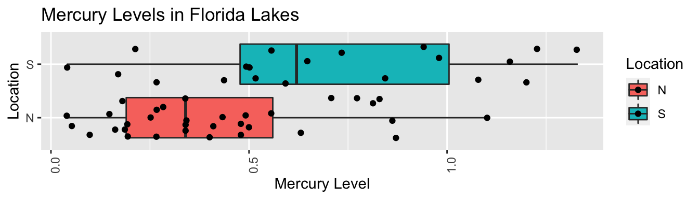
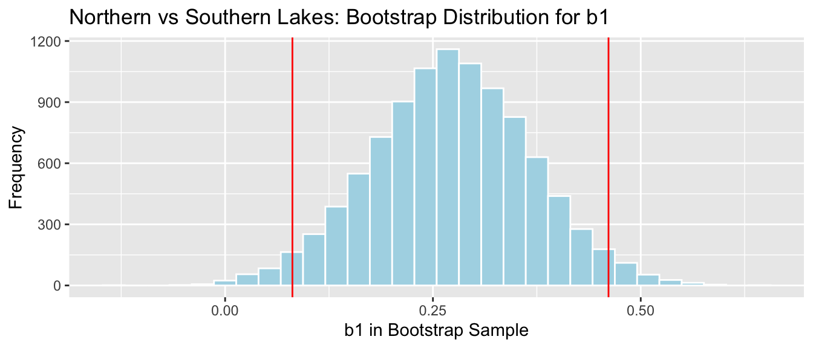
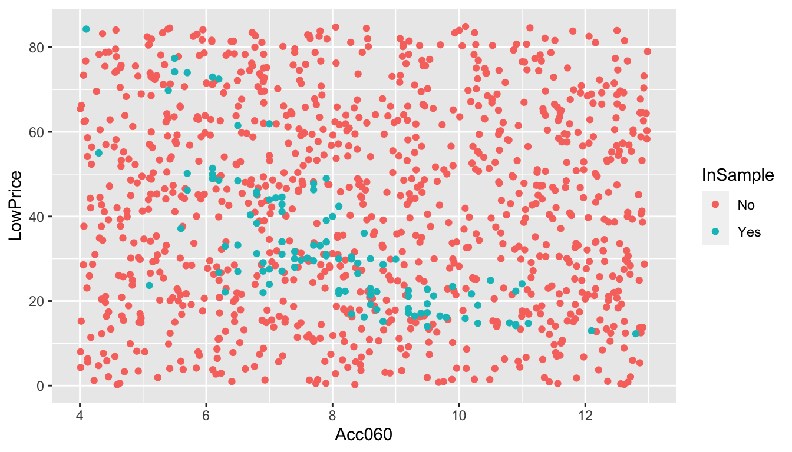
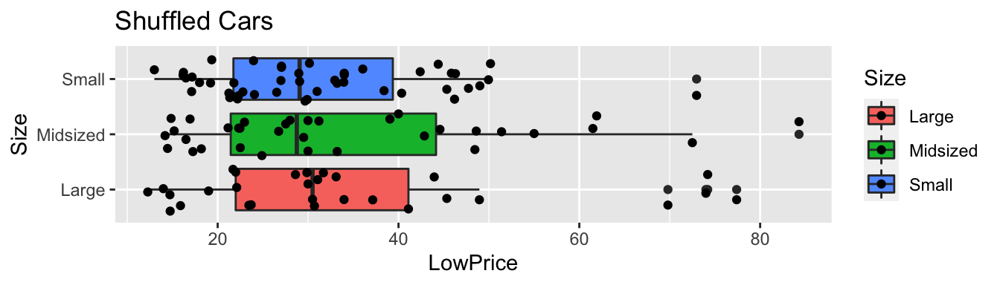
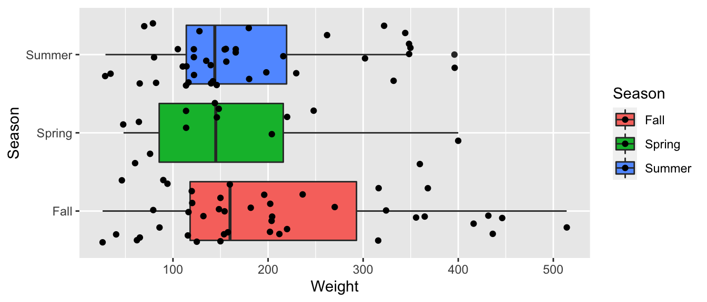
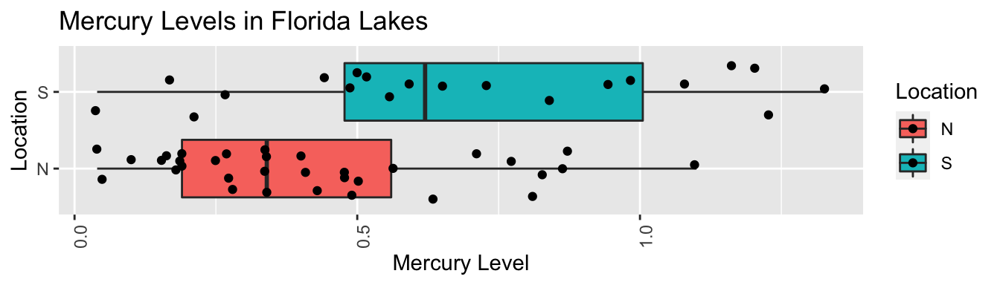
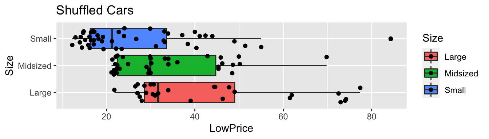
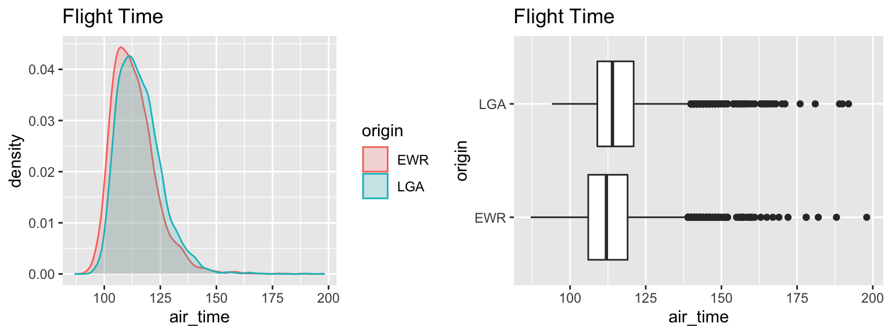

Chapter 4 Simulation-Based Hypothesis Tests
4.1 Introduction to Hypothesis Testing via Simulation
4.1.1 Difference between North and South?
ggplot(data=FloridaLakes, aes(x=Location, y=AvgMercury, fill=Location)) +
geom_boxplot() + geom_jitter() + ggtitle("Mercury Levels in Florida Lakes") +
xlab("Location") + ylab("Mercury Level") + theme(axis.text.x = element_text(angle = 90)) + coord_flip()
FloridaLakes %>% group_by(Location) %>% summarize(MeanHg=mean(AvgMercury),
StDevHg=sd(AvgMercury),
N=n())## # A tibble: 2 x 4
## Location MeanHg StDevHg N
## <fct> <dbl> <dbl> <int>
## 1 N 0.425 0.270 33
## 2 S 0.696 0.384 204.1.2 Model for Lakes Example
\(\widehat{\text{Hg}} = b_0 +b_1\text{I}_{\text{South}}\)
- \(b_0\) represents the mean mercury level for lakes in North Florida, and
- \(b_1\) represents the mean difference in mercury level for lakes in South Florida, compared to North Florida
4.1.3 Model for Lakes R Output
Lakes_M <- lm(data=FloridaLakes, AvgMercury ~ Location)
summary(Lakes_M)##
## Call:
## lm(formula = AvgMercury ~ Location, data = FloridaLakes)
##
## Residuals:
## Min 1Q Median 3Q Max
## -0.65650 -0.23455 -0.08455 0.24350 0.67545
##
## Coefficients:
## Estimate Std. Error t value Pr(>|t|)
## (Intercept) 0.42455 0.05519 7.692 0.000000000441 ***
## LocationS 0.27195 0.08985 3.027 0.00387 **
## ---
## Signif. codes: 0 '***' 0.001 '**' 0.01 '*' 0.05 '.' 0.1 ' ' 1
##
## Residual standard error: 0.3171 on 51 degrees of freedom
## Multiple R-squared: 0.1523, Adjusted R-squared: 0.1357
## F-statistic: 9.162 on 1 and 51 DF, p-value: 0.0038684.1.4 Interpreting Lakes Regression Output
\(\widehat{\text{Hg}} = 0.4245455 +0.2719545\text{I}_{\text{South}}\)
\(b_1 = 0.27915= 0.6965 - 0.4245\) is equal to the difference in mean mercury levels between Northern and Southern lakes. (We've already seen that for categorical variables, the least-squares estimate is the mean, so this makes sense.)
We can use \(b_1\) to assess the size of the difference in mean mercury concentration levels.
4.1.5 Differences between Northern and Southern Lakes?
Do these results provide evidence that among all Florida lakes, the mean mercury level is higher in the South than in the North?
Is is possible that there is really no difference in mean mercury level, and we just happened, by random chance, to select lakes in the south that had higher mercury levels than most?
Key Question:
- How likely is it that we would have observed a difference in means (i.e. a value of \(b_1\)) as extreme as 0.6965-0.4245 = 0.27195 ppm, merely by chance, if there is really no relationship between location and mercury level?
4.1.6 Investigation by Simulation
We can answer the key question using simulation.
We'll simulate situations where there is no relationship between location and mercury level, and see how often we observe a value of \(b_1\) as extreme as 0.27195.
Procedure:
Randomly shuffle the locations of the lakes, so that any relationship between location and mercury level is due only to chance.
Calculate the difference in mean mercury levels (i.e. value of \(b_1\)) in "Northern" and "Southern" lakes, using the shuffled data.
- Repeat steps 1 and 2 many (say 10,000) times, recording the difference in means (i.e. value of \(b_1\)) each time.
Analyze the distribution of mean differences, simulated under the assumption that there is no relationship between location and mercury level. Look whether the actual difference we observed is consistent with the simulation results.
4.1.7 First Lakes Shuffle Simulation
ShuffledLakes <- FloridaLakes ## create copy of dataset
ShuffledLakes$Location <- ShuffledLakes$Location[sample(1:nrow(ShuffledLakes))] | Lake | Location | AvgMercury | Shuffled Location |
|---|---|---|---|
| Alligator | S | 1.23 | N |
| Annie | S | 1.33 | N |
| Apopka | N | 0.04 | N |
| Blue Cypress | S | 0.44 | N |
| Brick | S | 1.20 | N |
| Bryant | N | 0.27 | S |
4.1.8 First Shuffle Model Results
Recall this model was fit under an assumption of no relationship between location and average mercury.
M_Lakes_Shuffle <- lm(data=ShuffledLakes, AvgMercury~Location)
summary(M_Lakes_Shuffle)##
## Call:
## lm(formula = AvgMercury ~ Location, data = ShuffledLakes)
##
## Residuals:
## Min 1Q Median 3Q Max
## -0.4891 -0.2591 -0.0440 0.2460 0.8009
##
## Coefficients:
## Estimate Std. Error t value Pr(>|t|)
## (Intercept) 0.529091 0.059944 8.826 0.00000000000761 ***
## LocationS -0.005091 0.097582 -0.052 0.959
## ---
## Signif. codes: 0 '***' 0.001 '**' 0.01 '*' 0.05 '.' 0.1 ' ' 1
##
## Residual standard error: 0.3444 on 51 degrees of freedom
## Multiple R-squared: 5.336e-05, Adjusted R-squared: -0.01955
## F-statistic: 0.002722 on 1 and 51 DF, p-value: 0.95864.1.9 Second Lakes Shuffle Simulation
ShuffledLakes <- FloridaLakes ## create copy of dataset
ShuffledLakes$Location <- ShuffledLakes$Location[sample(1:nrow(ShuffledLakes))]
kable(head(Shuffle1df))| Lake | Location | AvgMercury | Shuffled Location |
|---|---|---|---|
| Alligator | S | 1.23 | N |
| Annie | S | 1.33 | N |
| Apopka | N | 0.04 | N |
| Blue Cypress | S | 0.44 | N |
| Brick | S | 1.20 | N |
| Bryant | N | 0.27 | S |
4.1.10 Second Shuffle Model Results
Recall this model was fit under an assumption of no relationship between location and average mercury.
M_Lakes_Shuffle <- lm(data=ShuffledLakes, AvgMercury~Location)
summary(M_Lakes_Shuffle)##
## Call:
## lm(formula = AvgMercury ~ Location, data = ShuffledLakes)
##
## Residuals:
## Min 1Q Median 3Q Max
## -0.51485 -0.27485 -0.05485 0.27515 0.77515
##
## Coefficients:
## Estimate Std. Error t value Pr(>|t|)
## (Intercept) 0.55485 0.05961 9.308 0.00000000000141 ***
## LocationS -0.07335 0.09704 -0.756 0.453
## ---
## Signif. codes: 0 '***' 0.001 '**' 0.01 '*' 0.05 '.' 0.1 ' ' 1
##
## Residual standard error: 0.3425 on 51 degrees of freedom
## Multiple R-squared: 0.01108, Adjusted R-squared: -0.008313
## F-statistic: 0.5713 on 1 and 51 DF, p-value: 0.45324.1.11 Third Lakes Shuffle Simulation
ShuffledLakes <- FloridaLakes ## create copy of dataset
ShuffledLakes$Location <- ShuffledLakes$Location[sample(1:nrow(ShuffledLakes))]
kable(head(Shuffle1df))| Lake | Location | AvgMercury | Shuffled Location |
|---|---|---|---|
| Alligator | S | 1.23 | N |
| Annie | S | 1.33 | N |
| Apopka | N | 0.04 | N |
| Blue Cypress | S | 0.44 | N |
| Brick | S | 1.20 | N |
| Bryant | N | 0.27 | N |
4.1.12 Third Shuffle Model Results
Recall this model was fit under an assumption of no relationship between location and average mercury.
M_Lakes_Shuffle <- lm(data=ShuffledLakes, AvgMercury~Location)
summary(M_Lakes_Shuffle)##
## Call:
## lm(formula = AvgMercury ~ Location, data = ShuffledLakes)
##
## Residuals:
## Min 1Q Median 3Q Max
## -0.56200 -0.26200 -0.08182 0.22818 0.74818
##
## Coefficients:
## Estimate Std. Error t value Pr(>|t|)
## (Intercept) 0.48182 0.05905 8.16 0.0000000000818 ***
## LocationS 0.12018 0.09612 1.25 0.217
## ---
## Signif. codes: 0 '***' 0.001 '**' 0.01 '*' 0.05 '.' 0.1 ' ' 1
##
## Residual standard error: 0.3392 on 51 degrees of freedom
## Multiple R-squared: 0.02974, Adjusted R-squared: 0.01072
## F-statistic: 1.563 on 1 and 51 DF, p-value: 0.21694.1.13 Fourth Lakes Shuffle Simulation
ShuffledLakes <- FloridaLakes ## create copy of dataset
ShuffledLakes$Location <- ShuffledLakes$Location[sample(1:nrow(ShuffledLakes))]
kable(head(Shuffle1df))| Lake | Location | AvgMercury | Shuffled Location |
|---|---|---|---|
| Alligator | S | 1.23 | N |
| Annie | S | 1.33 | S |
| Apopka | N | 0.04 | S |
| Blue Cypress | S | 0.44 | N |
| Brick | S | 1.20 | N |
| Bryant | N | 0.27 | N |
4.1.14 Fourth Shuffle Model Results
Recall this model was fit under an assumption of no relationship between location and average mercury.
M_Lakes_Shuffle <- lm(data=ShuffledLakes, AvgMercury~Location)
summary(M_Lakes_Shuffle)##
## Call:
## lm(formula = AvgMercury ~ Location, data = ShuffledLakes)
##
## Residuals:
## Min 1Q Median 3Q Max
## -0.5261 -0.2730 -0.0630 0.2470 0.7639
##
## Coefficients:
## Estimate Std. Error t value Pr(>|t|)
## (Intercept) 0.56606 0.05929 9.548 0.00000000000061 ***
## LocationS -0.10306 0.09651 -1.068 0.291
## ---
## Signif. codes: 0 '***' 0.001 '**' 0.01 '*' 0.05 '.' 0.1 ' ' 1
##
## Residual standard error: 0.3406 on 51 degrees of freedom
## Multiple R-squared: 0.02187, Adjusted R-squared: 0.002691
## F-statistic: 1.14 on 1 and 51 DF, p-value: 0.29064.1.15 Fifth Lakes Shuffle Simulation
ShuffledLakes <- FloridaLakes ## create copy of dataset
ShuffledLakes$Location <- ShuffledLakes$Location[sample(1:nrow(ShuffledLakes))]
kable(head(Shuffle1df))| Lake | Location | AvgMercury | Shuffled Location |
|---|---|---|---|
| Alligator | S | 1.23 | N |
| Annie | S | 1.33 | N |
| Apopka | N | 0.04 | N |
| Blue Cypress | S | 0.44 | S |
| Brick | S | 1.20 | S |
| Bryant | N | 0.27 | N |
4.1.16 Fifth Shuffle Model Results
Recall this model was fit under an assumption of no relationship between location and average mercury.
M_Lakes_Shuffle <- lm(data=ShuffledLakes, AvgMercury~Location)
summary(M_Lakes_Shuffle)##
## Call:
## lm(formula = AvgMercury ~ Location, data = ShuffledLakes)
##
## Residuals:
## Min 1Q Median 3Q Max
## -0.50455 -0.24850 -0.05455 0.22545 0.78545
##
## Coefficients:
## Estimate Std. Error t value Pr(>|t|)
## (Intercept) 0.54455 0.05981 9.104 0.00000000000286 ***
## LocationS -0.04605 0.09737 -0.473 0.638
## ---
## Signif. codes: 0 '***' 0.001 '**' 0.01 '*' 0.05 '.' 0.1 ' ' 1
##
## Residual standard error: 0.3436 on 51 degrees of freedom
## Multiple R-squared: 0.004366, Adjusted R-squared: -0.01516
## F-statistic: 0.2236 on 1 and 51 DF, p-value: 0.63834.1.17 Code for Simulation Investigation
b1 <- Lakes_M$coef[2] ## record value of b1 from actual data
## perform simulation
b1Sim <- rep(NA, 10000) ## vector to hold results
ShuffledLakes <- FloridaLakes ## create copy of dataset
for (i in 1:10000){
#randomly shuffle locations
ShuffledLakes$Location <- ShuffledLakes$Location[sample(1:nrow(ShuffledLakes))]
ShuffledLakes_M<- lm(data=ShuffledLakes, AvgMercury ~ Location) #fit model to shuffled data
b1Sim[i] <- ShuffledLakes_M$coef[2] ## record b1 from shuffled model
}
NSLakes_SimulationResults <- data.frame(b1Sim) #save results in dataframe4.1.18 Simulation Results
NSLakes_SimulationResultsPlot <- ggplot(data=NSLakes_SimulationResults, aes(x=b1Sim)) +
geom_histogram(fill="lightblue", color="white") +
geom_vline(xintercept=c(b1, -1*b1), color="red") +
xlab("Lakes: Simulated Value of b1") + ylab("Frequency") +
ggtitle("Distribution of b1 under assumption of no relationship")
NSLakes_SimulationResultsPlot
It appears unlikely that we would observe a value of \(b_1\) as extreme as 0.27195 ppm by chance, if there is really no relationship between location and mercury level.
4.1.19 Conclusions
Number of simulations resulting in simulation value of \(b_1\) more extreme than 0.27195.
sum(abs(b1Sim) > abs(b1))## [1] 31Proportion of simulations resulting in simulation value of \(b_1\) more extreme than 0.27195.
mean(abs(b1Sim) > abs(b1))## [1] 0.0031The probability of observing a value of \(b_1\) as extreme as 0.27195 by chance, when there is no relationship between location and mercury level is very low.
There is strong evidence of a relationship between location and mercury level. In this case, there is strong evidence that mercury level is higher in Southern Lakes than northern Lakes.
4.1.20 Recall Lakes Bootstrap for Difference
## 2.5% 97.5%
## 0.08095682 0.46122992NS_Lakes_Bootstrap_Plot_b1 + geom_vline(xintercept = c(q.025, q.975), color="red")
We are 95% confident the average mercury level in Southern Lakes is between 0.08 and 0.46 ppm higher than in Northern Florida.
The fact that the interval does not contain 0 is consistent with the hypothesis test.
4.1.21 Hypothesis Testing Terminology
We can think of the simulation as a test of the following hypotheses:
Hypothesis 1: There is no relationship between location and mercury level. (Thus the difference of 0.27 we observed in our data occurred just by chance).
Hypothesis 2: The difference we observed did not occur by chance (suggesting a relationship between location and mercury level).
The "no relationship," or "chance alone" hypothesis is called the null hypothesis. The other hypothesis is called the alternative hypothesis.
4.1.22 Hypothesis Testing Terminology (Continued)
We used \(b_1\) to measure difference in mean mercury levels between the locations in our observed data.
We found that the probability of observing a difference as extreme as 0.27 when Hypothesis 1 is true is very low (approximately 0.0017)
- The statistic used to measure the difference or relationship we are interested in is called a test statistic.
- In this case, the test statistic is (\(b_1\))
- The p-value is the probability of observing a test statistic as extreme or more extreme than we did when the null hypothesis is true.
- A low p-value provides evidence against the null hypothesis.
- A high p-value means that the data could have plausibly been obtained when the null hypothesis is true, and thus the null hypothesis cannot be ruled out.
- A high p-value does not mean that the null hypothesis is true or probably true. A p-value can only tell us the strength of evidence against the null hypothesis, and should never be interpreted as support for the null hypothesis.
- A low p-value provides evidence against the null hypothesis.
4.1.23 How Low Should the p-value Be
knitr::include_graphics("pvals.png")
4.2 Simulation-Based Hypothesis Test for Regression Coefficients
4.2.1 Is Car Price Associated with Acceleration Time?
ggplot(data=Cars2015, aes(x=Acc060, y=LowPrice)) + geom_point() +
stat_smooth(method="lm", se=FALSE)
\(\widehat{Price} = b_0+b_1\times \text{Acc. Time} =89.9036 -7.1933\times\text{Acc. Time}\)
4.2.2 What if there really was no Relationship?

Is it possible that there is really no relationship between price and acceleration time, and we just happened to choose a sample that led to a slope of -7.1933, by chance?
4.2.3 Acc060 Key Question and Hypotheses
If there is really no relationship between price and acceleration time, then we would expect a slope (i.e value of \(b_1\)) equal to 0.
Key Question:
- How likely is it that we would have observed a slope (i.e. a value of \(b_1\)) as extreme as -7.1933 merely by chance, if there is really no relationship between price and acceleration time?
Null Hypothesis: There is no relationship between price and acceleration time, and the slope we observed occurred merely by chance.
Alternative Hypothesis: The slope we observed is due to more than chance, suggesting there is a relationship between price and acceleration time.
4.2.4 Simulation-Based Hypothesis Test for Cars
Procedure:
Randomly shuffle the acceleration times, so that any relationship between acceleration time and price is due only to chance.
Fit a regression line to the shuffled data and record the slope of the regression line.
- Repeat steps 1 and 2 many (say 10,000) times, recording the slope (i.e. value of \(b_1\)) each time.
Analyze the distribution of slopes, simulated under the assumption that there is no relationship between price and acceleration time. Look whether the actual slope we observed is consistent with the simulation results.
4.2.5 First Cars Shuffle Simulation
ShuffledCars <- Cars2015 ## create copy of dataset
ShuffledCars$Acc060 <- ShuffledCars$Acc060[sample(1:nrow(ShuffledCars))] | Make | Model | LowPrice | Acc060 | ShuffledAcc060 |
|---|---|---|---|---|
| Chevrolet | Spark | 12.270 | 12.8 | 8.6 |
| Hyundai | Accent | 14.745 | 10.3 | 6.5 |
| Kia | Rio | 13.990 | 9.5 | 7.2 |
| Mitsubishi | Mirage | 12.995 | 12.1 | 7.4 |
| Nissan | Versa Note | 14.180 | 10.9 | 5.4 |
| Dodge | Dart | 16.495 | 9.3 | 8.4 |
4.2.6 First Cars Shuffle Model Results
Recall this model was fit under an assumption of no relationship between price and acceleration time.
M_Cars_Shuffle <- lm(data=ShuffledCars, LowPrice~Acc060)
summary(M_Cars_Shuffle)##
## Call:
## lm(formula = LowPrice ~ Acc060, data = ShuffledCars)
##
## Residuals:
## Min 1Q Median 3Q Max
## -21.145 -11.306 -3.949 9.605 50.885
##
## Coefficients:
## Estimate Std. Error t value Pr(>|t|)
## (Intercept) 25.5358 7.5156 3.398 0.000952 ***
## Acc060 0.9162 0.9273 0.988 0.325362
## ---
## Signif. codes: 0 '***' 0.001 '**' 0.01 '*' 0.05 '.' 0.1 ' ' 1
##
## Residual standard error: 15.93 on 108 degrees of freedom
## Multiple R-squared: 0.008957, Adjusted R-squared: -0.0002189
## F-statistic: 0.9761 on 1 and 108 DF, p-value: 0.32544.2.7 Second Cars Shuffle Simulation
ShuffledCars <- Cars2015 ## create copy of dataset
ShuffledCars$Acc060 <- ShuffledCars$Acc060[sample(1:nrow(ShuffledCars))] | Make | Model | LowPrice | Acc060 | ShuffledAcc060 |
|---|---|---|---|---|
| Chevrolet | Spark | 12.270 | 12.8 | 7.9 |
| Hyundai | Accent | 14.745 | 10.3 | 7.9 |
| Kia | Rio | 13.990 | 9.5 | 7.4 |
| Mitsubishi | Mirage | 12.995 | 12.1 | 6.1 |
| Nissan | Versa Note | 14.180 | 10.9 | 7.2 |
| Dodge | Dart | 16.495 | 9.3 | 5.5 |
4.2.8 Second Cars Shuffle Model Results
Recall this model was fit under an assumption of no relationship between price and acceleration time.
M_Cars_Shuffle <- lm(data=ShuffledCars, LowPrice~Acc060)
summary(M_Cars_Shuffle)##
## Call:
## lm(formula = LowPrice ~ Acc060, data = ShuffledCars)
##
## Residuals:
## Min 1Q Median 3Q Max
## -20.550 -11.017 -3.430 9.464 51.609
##
## Coefficients:
## Estimate Std. Error t value Pr(>|t|)
## (Intercept) 35.364 7.545 4.687 0.00000814 ***
## Acc060 -0.322 0.931 -0.346 0.73
## ---
## Signif. codes: 0 '***' 0.001 '**' 0.01 '*' 0.05 '.' 0.1 ' ' 1
##
## Residual standard error: 15.99 on 108 degrees of freedom
## Multiple R-squared: 0.001106, Adjusted R-squared: -0.008143
## F-statistic: 0.1196 on 1 and 108 DF, p-value: 0.73014.2.9 Third Cars Shuffle Simulation
ShuffledCars <- Cars2015 ## create copy of dataset
ShuffledCars$Acc060 <- ShuffledCars$Acc060[sample(1:nrow(ShuffledCars))] | Make | Model | LowPrice | Acc060 | ShuffledAcc060 |
|---|---|---|---|---|
| Chevrolet | Spark | 12.270 | 12.8 | 6.9 |
| Hyundai | Accent | 14.745 | 10.3 | 7.9 |
| Kia | Rio | 13.990 | 9.5 | 10.8 |
| Mitsubishi | Mirage | 12.995 | 12.1 | 6.1 |
| Nissan | Versa Note | 14.180 | 10.9 | 8.4 |
| Dodge | Dart | 16.495 | 9.3 | 7.4 |
4.2.10 Third Cars Shuffle Model Results
Recall this model was fit under an assumption of no relationship between price and acceleration time.
M_Cars_Shuffle <- lm(data=ShuffledCars, LowPrice~Acc060)
summary(M_Cars_Shuffle)##
## Call:
## lm(formula = LowPrice ~ Acc060, data = ShuffledCars)
##
## Residuals:
## Min 1Q Median 3Q Max
## -21.798 -10.745 -3.390 9.009 49.507
##
## Coefficients:
## Estimate Std. Error t value Pr(>|t|)
## (Intercept) 41.3835 7.5024 5.516 0.000000239 ***
## Acc060 -1.0804 0.9257 -1.167 0.246
## ---
## Signif. codes: 0 '***' 0.001 '**' 0.01 '*' 0.05 '.' 0.1 ' ' 1
##
## Residual standard error: 15.9 on 108 degrees of freedom
## Multiple R-squared: 0.01246, Adjusted R-squared: 0.003311
## F-statistic: 1.362 on 1 and 108 DF, p-value: 0.24574.2.11 Fourth Cars Shuffle Simulation
ShuffledCars <- Cars2015 ## create copy of dataset
ShuffledCars$Acc060 <- ShuffledCars$Acc060[sample(1:nrow(ShuffledCars))] | Make | Model | LowPrice | Acc060 | ShuffledAcc060 |
|---|---|---|---|---|
| Chevrolet | Spark | 12.270 | 12.8 | 8.6 |
| Hyundai | Accent | 14.745 | 10.3 | 11.0 |
| Kia | Rio | 13.990 | 9.5 | 6.9 |
| Mitsubishi | Mirage | 12.995 | 12.1 | 10.3 |
| Nissan | Versa Note | 14.180 | 10.9 | 9.8 |
| Dodge | Dart | 16.495 | 9.3 | 6.5 |
4.2.12 Fourth Cars Shuffle Model Results
Recall this model was fit under an assumption of no relationship between price and acceleration time.
M_Cars_Shuffle <- lm(data=ShuffledCars, LowPrice~Acc060)
summary(M_Cars_Shuffle)##
## Call:
## lm(formula = LowPrice ~ Acc060, data = ShuffledCars)
##
## Residuals:
## Min 1Q Median 3Q Max
## -24.382 -11.808 -3.246 9.664 48.778
##
## Coefficients:
## Estimate Std. Error t value Pr(>|t|)
## (Intercept) 45.9647 7.4380 6.180 0.0000000116 ***
## Acc060 -1.6576 0.9178 -1.806 0.0737 .
## ---
## Signif. codes: 0 '***' 0.001 '**' 0.01 '*' 0.05 '.' 0.1 ' ' 1
##
## Residual standard error: 15.76 on 108 degrees of freedom
## Multiple R-squared: 0.02932, Adjusted R-squared: 0.02033
## F-statistic: 3.262 on 1 and 108 DF, p-value: 0.073694.2.13 Fifth Cars Shuffle Simulation
ShuffledCars <- Cars2015 ## create copy of dataset
ShuffledCars$Acc060 <- ShuffledCars$Acc060[sample(1:nrow(ShuffledCars))] | Make | Model | LowPrice | Acc060 | ShuffledAcc060 |
|---|---|---|---|---|
| Chevrolet | Spark | 12.270 | 12.8 | 8.6 |
| Hyundai | Accent | 14.745 | 10.3 | 7.7 |
| Kia | Rio | 13.990 | 9.5 | 7.7 |
| Mitsubishi | Mirage | 12.995 | 12.1 | 6.8 |
| Nissan | Versa Note | 14.180 | 10.9 | 7.9 |
| Dodge | Dart | 16.495 | 9.3 | 10.9 |
4.2.14 Fifth Cars Shuffle Model Results
Recall this model was fit under an assumption of no relationship between price and acceleration time.
M_Cars_Shuffle <- lm(data=ShuffledCars, LowPrice~Acc060)
summary(M_Cars_Shuffle)##
## Call:
## lm(formula = LowPrice ~ Acc060, data = ShuffledCars)
##
## Residuals:
## Min 1Q Median 3Q Max
## -20.469 -11.188 -3.441 8.841 50.951
##
## Coefficients:
## Estimate Std. Error t value Pr(>|t|)
## (Intercept) 37.3890 7.5361 4.961 0.00000262 ***
## Acc060 -0.5771 0.9299 -0.621 0.536
## ---
## Signif. codes: 0 '***' 0.001 '**' 0.01 '*' 0.05 '.' 0.1 ' ' 1
##
## Residual standard error: 15.97 on 108 degrees of freedom
## Multiple R-squared: 0.003554, Adjusted R-squared: -0.005672
## F-statistic: 0.3852 on 1 and 108 DF, p-value: 0.53614.2.15 Code for Acc060 Simulation Investigation
b1 <- Cars_M_A060$coef[2] ## record value of b1 from actual data
## perform simulation
b1Sim <- rep(NA, 10000) ## vector to hold results
ShuffledCars <- Cars2015 ## create copy of dataset
for (i in 1:10000){
#randomly shuffle acceleration times
ShuffledCars$Acc060 <- ShuffledCars$Acc060[sample(1:nrow(ShuffledCars))]
ShuffledCars_M<- lm(data=ShuffledCars, LowPrice ~ Acc060) #fit model to shuffled data
b1Sim[i] <- ShuffledCars_M$coef[2] ## record b1 from shuffled model
}
Cars_A060SimulationResults <- data.frame(b1Sim) #save results in dataframe4.2.16 Acc060 Simulation Results
b1 <- Cars_M_A060$coef[2] ## record value of b1 from actual data
Cars_A060SimulationResultsPlot <- ggplot(data=Cars_A060SimulationResults, aes(x=b1Sim)) +
geom_histogram(fill="lightblue", color="white") +
geom_vline(xintercept=c(b1, -1*b1), color="red") +
xlab("Simulated Value of b1") + ylab("Frequency") +
ggtitle("Distribution of b1 under assumption of no relationship")
Cars_A060SimulationResultsPlot
It is extremely unlikely that we would observe a value of \(b_1\) as extreme as -7.1933 by chance, if there is really no relationship between price and acceleration time.
4.2.17 Acc060 P-value and Conclusion
Proportion of simulations resulting in simulation value of \(b_2\) more extreme than -7.1933.
mean(abs(b1Sim) > abs(b1))## [1] 0The probability of observing a value of \(b_1\) as extreme as -7.1933 by chance, when there is no relationship between location and mercury level practically zero.
There is very strong evidence of a relationship between price and acceleration time.
4.2.18 Cars Bootstrap
q.025 <- quantile(Cars_Bootstrap_Results_Acc060$b1, .025)
q.975 <- quantile(Cars_Bootstrap_Results_Acc060$b1, .975)Cars_Acc060_B_Slope_Plot + geom_vline(xintercept=c(q.025, q.975), col="red")
We are 95% confident that the average price of a new 2015 car decreases between -8.75 and -5.67 thousand dollars for each additional second it takes to accelerate from 0 to 60 mph.
4.3 Simulation-Based Hypothesis Test for F-Statistics
4.3.1 Relationship Price and Car Size
ggplot(data=Cars2015, aes(x=Size, y=LowPrice, fill=Size)) +
geom_boxplot() + geom_jitter() + coord_flip()
Cars2015 %>% group_by(Size) %>% summarize(MeanPrice = mean(LowPrice),
StDevPrice=sd(LowPrice),
N=n())## # A tibble: 3 x 4
## Size MeanPrice StDevPrice N
## <fct> <dbl> <dbl> <int>
## 1 Large 42.3 17.9 29
## 2 Midsized 33.2 12.0 34
## 3 Small 26.7 14.4 474.3.2 Cars Questions of Interest
Do the data provide evidence of a relationship between price and size of vehicle?
- Is there evidence of a difference in average price between...
- large and midsized cars?
- large and small cars?
- small and midsized cars?
- large and midsized cars?
4.3.3 Cars Price and Size Model
Cars_M_Size = lm(data=Cars2015, LowPrice~Size)
summary(Cars_M_Size)##
## Call:
## lm(formula = LowPrice ~ Size, data = Cars2015)
##
## Residuals:
## Min 1Q Median 3Q Max
## -20.516 -11.190 -4.005 9.064 57.648
##
## Coefficients:
## Estimate Std. Error t value Pr(>|t|)
## (Intercept) 42.311 2.737 15.460 < 0.0000000000000002 ***
## SizeMidsized -9.098 3.725 -2.442 0.0162 *
## SizeSmall -15.659 3.480 -4.499 0.0000174 ***
## ---
## Signif. codes: 0 '***' 0.001 '**' 0.01 '*' 0.05 '.' 0.1 ' ' 1
##
## Residual standard error: 14.74 on 107 degrees of freedom
## Multiple R-squared: 0.1593, Adjusted R-squared: 0.1436
## F-statistic: 10.14 on 2 and 107 DF, p-value: 0.000092714.3.4 Relationship between Size and Price
- Do the data provide evidence of a relationship between price and size of vehicle?
\(\widehat{\text{Price}} = b_0 +b_1\times\text{I}_{\text{Midsized}}+ b_2\times\text{I}_{\text{Large}}\)
- \(b_0\) represents expected price of large cars.
- \(b_1\) represents expected difference in price between large and midsized cars.
- \(b_2\) represents expected difference in price between large and small cars.
Unfortunately, none of these measure whether there is an overall relationship between price and size.
Recall that the ANOVA F-statistic combines information from all of the groups. Thus, it can be used to assess the strength of evidence of differences.
4.3.5 F-Statistic for Car Size and Price
Cars_A_Size <- aov(data=Cars2015, LowPrice~Size)
summary(Cars_A_Size)## Df Sum Sq Mean Sq F value Pr(>F)
## Size 2 4405 2202.7 10.14 0.0000927 ***
## Residuals 107 23242 217.2
## ---
## Signif. codes: 0 '***' 0.001 '**' 0.01 '*' 0.05 '.' 0.1 ' ' 14.3.6 Key Question in Car Size Investigation
Null Hypothesis: There is no relationship between price and car size.
Alternative Hypothesis: There is a relationship between price and car size.
Key Question: How likely is it that we would have obtained an F-statistic as extreme as 10.14 by chance, if there is really no relationship between price and size?
4.3.7 Simulation-Based Test for F-Statistic
We'll simulate situations where there is no relationship between size and price, and see how often we observe an F-statistic as extreme as 10.14.
Procedure:
Randomly shuffle the sizes of the vehicles, so that any relationship between size and price is due only to chance.
Fit a model, using the shuffled data, with price as the response variable, and size as the explanatory variable. Record the F-statistic.
Repeat steps 1 and 2 many (say 10,000) times, recording the F-statistic each time.
Analyze the distribution of F-statistics, simulated under the assumption that there is no relationship between size and price. Look whether the actual F-statistic we observed is consistent with the simulation results.
4.3.8 First Cars Shuffle Simulation
ShuffledCars <- Cars2015 ## create copy of dataset
ShuffledCars$Size <- ShuffledCars$Size[sample(1:nrow(ShuffledCars))] | Make | Model | LowPrice | Size | ShuffledSize |
|---|---|---|---|---|
| Chevrolet | Spark | 12.270 | Small | Small |
| Hyundai | Accent | 14.745 | Small | Small |
| Kia | Rio | 13.990 | Small | Midsized |
| Mitsubishi | Mirage | 12.995 | Small | Midsized |
| Nissan | Versa Note | 14.180 | Small | Small |
| Dodge | Dart | 16.495 | Small | Small |
4.3.9 First Cars Shuffle Model Results
Recall this model was fit under an assumption of no relationship between price and size.
ggplot(data=ShuffledCars, aes(x=Size, y=LowPrice, fill=Size)) +
geom_boxplot() + geom_jitter() + coord_flip() + ggtitle("Shuffled Cars")
Cars_A_Size_Shuffle <- aov(data=ShuffledCars, LowPrice~Size)
summary(Cars_A_Size_Shuffle)## Df Sum Sq Mean Sq F value Pr(>F)
## Size 2 1328 663.8 2.699 0.0719 .
## Residuals 107 26320 246.0
## ---
## Signif. codes: 0 '***' 0.001 '**' 0.01 '*' 0.05 '.' 0.1 ' ' 14.3.10 Second Cars Shuffle Simulation
ShuffledCars <- Cars2015 ## create copy of dataset
ShuffledCars$Size <- ShuffledCars$Size[sample(1:nrow(ShuffledCars))] | Make | Model | LowPrice | Size | ShuffledSize |
|---|---|---|---|---|
| Chevrolet | Spark | 12.270 | Small | Large |
| Hyundai | Accent | 14.745 | Small | Large |
| Kia | Rio | 13.990 | Small | Large |
| Mitsubishi | Mirage | 12.995 | Small | Small |
| Nissan | Versa Note | 14.180 | Small | Midsized |
| Dodge | Dart | 16.495 | Small | Midsized |
4.3.11 Second Cars Shuffle Model Results
Recall this model was fit under an assumption of no relationship between price and size.
ggplot(data=ShuffledCars, aes(x=Size, y=LowPrice, fill=Size)) +
geom_boxplot() + geom_jitter() + coord_flip() + ggtitle("Shuffled Cars")
Cars_A_Size_Shuffle <- aov(data=ShuffledCars, LowPrice~Size)
summary(Cars_A_Size_Shuffle)## Df Sum Sq Mean Sq F value Pr(>F)
## Size 2 231 115.6 0.451 0.638
## Residuals 107 27417 256.24.3.12 Third Cars Shuffle Simulation
ShuffledCars <- Cars2015 ## create copy of dataset
ShuffledCars$Size <- ShuffledCars$Size[sample(1:nrow(ShuffledCars))] | Make | Model | LowPrice | Size | ShuffledSize |
|---|---|---|---|---|
| Chevrolet | Spark | 12.270 | Small | Midsized |
| Hyundai | Accent | 14.745 | Small | Small |
| Kia | Rio | 13.990 | Small | Midsized |
| Mitsubishi | Mirage | 12.995 | Small | Small |
| Nissan | Versa Note | 14.180 | Small | Small |
| Dodge | Dart | 16.495 | Small | Small |
4.3.13 Third Cars Shuffle Model Results
Recall this model was fit under an assumption of no relationship between price and size.
ggplot(data=ShuffledCars, aes(x=Size, y=LowPrice, fill=Size)) +
geom_boxplot() + geom_jitter() + coord_flip() + ggtitle("Shuffled Cars")
Cars_A_Size_Shuffle <- aov(data=ShuffledCars, LowPrice~Size)
summary(Cars_A_Size_Shuffle)## Df Sum Sq Mean Sq F value Pr(>F)
## Size 2 1134 566.8 2.287 0.106
## Residuals 107 26514 247.84.3.14 Fourth Cars Shuffle Simulation
ShuffledCars <- Cars2015 ## create copy of dataset
ShuffledCars$Size <- ShuffledCars$Size[sample(1:nrow(ShuffledCars))] | Make | Model | LowPrice | Size | ShuffledSize |
|---|---|---|---|---|
| Chevrolet | Spark | 12.270 | Small | Large |
| Hyundai | Accent | 14.745 | Small | Midsized |
| Kia | Rio | 13.990 | Small | Small |
| Mitsubishi | Mirage | 12.995 | Small | Small |
| Nissan | Versa Note | 14.180 | Small | Large |
| Dodge | Dart | 16.495 | Small | Midsized |
4.3.15 Fourth Cars Shuffle Model Results
Recall this model was fit under an assumption of no relationship between price and size.
ggplot(data=ShuffledCars, aes(x=Size, y=LowPrice, fill=Size)) +
geom_boxplot() + geom_jitter() + coord_flip() + ggtitle("Shuffled Cars")
Cars_A_Size_Shuffle <- aov(data=ShuffledCars, LowPrice~Size)
summary(Cars_A_Size_Shuffle)## Df Sum Sq Mean Sq F value Pr(>F)
## Size 2 128 64.21 0.25 0.78
## Residuals 107 27519 257.194.3.16 Fifth Cars Shuffle Simulation
ShuffledCars <- Cars2015 ## create copy of dataset
ShuffledCars$Size <- ShuffledCars$Size[sample(1:nrow(ShuffledCars))] | Make | Model | LowPrice | Size | ShuffledSize |
|---|---|---|---|---|
| Chevrolet | Spark | 12.270 | Small | Large |
| Hyundai | Accent | 14.745 | Small | Midsized |
| Kia | Rio | 13.990 | Small | Large |
| Mitsubishi | Mirage | 12.995 | Small | Large |
| Nissan | Versa Note | 14.180 | Small | Small |
| Dodge | Dart | 16.495 | Small | Midsized |
4.3.17 Fifth Cars Shuffle Model Results
Recall this model was fit under an assumption of no relationship between price and size.
ggplot(data=ShuffledCars, aes(x=Size, y=LowPrice, fill=Size)) +
geom_boxplot() + geom_jitter() + coord_flip() + ggtitle("Shuffled Cars")
Cars_A_Size_Shuffle <- aov(data=ShuffledCars, LowPrice~Size)
summary(Cars_A_Size_Shuffle)## Df Sum Sq Mean Sq F value Pr(>F)
## Size 2 46 22.86 0.089 0.915
## Residuals 107 27602 257.964.3.18 Car Size F-Statistic Simulation
Fstat <- summary(Cars_M_Size)$fstatistic[1] ## record value of F-statistic from actual data
## perform simulation
FSim <- rep(NA, 10000) ## vector to hold results
ShuffledCars <- Cars2015 ## create copy of dataset
for (i in 1:10000){
#randomly shuffle acceleration times
ShuffledCars$Size <- ShuffledCars$Size[sample(1:nrow(ShuffledCars))]
ShuffledCars_M<- lm(data=ShuffledCars, LowPrice ~ Size) #fit model to shuffled data
FSim[i] <- summary(ShuffledCars_M)$fstatistic[1] ## record F from shuffled model
}
CarSize_SimulationResults <- data.frame(FSim) #save results in dataframe4.3.19 F-statistic for Size Simulation Results
CarSize_SimulationResults_Plot <- ggplot(data=CarSize_SimulationResults, aes(x=FSim)) +
geom_histogram(fill="lightblue", color="white") + geom_vline(xintercept=c(Fstat), color="red") +
xlab("Simulated Value of F") + ylab("Frequency") + ggtitle("Distribution of F under assumption of no relationship")
CarSize_SimulationResults_Plot
p-value:
mean(FSim > Fstat)## [1] 0.0002The data provide strong evidence of a relationship between price and size.
4.3.20 Differences Between Different Sizes
Now that we have evidence that car price is related to size, we might want to know which sizes differ from each other.
Is there evidence of a difference in average price between...
a) large and midsized cars?
b) large and small cars?
c) small and midsized cars?
4.3.21 Regression Coefficients for Tests Between Sizes
\(\widehat{\text{Price}} = b_0 +b_1\times\text{I}_{\text{Midsized}}+ b_2\times\text{I}_{\text{Large}}\)
- \(b_0\) represents expected price of large cars.
- \(b_1\) represents expected difference in price between large and midsized cars.
- \(b_2\) represents expected difference in price between large and small cars.
Thus, we can answer each question by looking at the appropriate regression coefficient.
a) large and midsized cars? (\(b_1\))
b) large and small cars? (\(b_2\))
c) small and midsized cars? (\(b_1-b_2\))
4.3.22 Simulation for Differences between Types of Cars
We'll simulate situations where there is no relationship between size and price, and see how often we observe results for \(b_1\), \(b_2\), and \(b_1-b_2\) as extreme as we did in the actual data.
Procedure:
Randomly shuffle the sizes of the vehicles, so that any relationship between size and price is due only to chance.
Fit a model, using the shuffled data, with price as the response variable, and size as the explanatory variable. Record the values of \(b_1\), \(b_2\), and \(b_1-b_2\).
Repeat steps 1 and 2 many (say 10,000) times, recording the values of \(b_1\), \(b_2\), and \(b_1-b_2\) each time.
Analyze the distribution of \(b_1\), \(b_2\), \(b_1-b_2\), simulated under the assumption that there is no relationship between size and price. Look whether the actual values we observed are consistent with the simulation results.
4.3.23 Code for Simulation-Based Test of Prices by Size
b1 <- Cars_M_Size$coefficients[2] #record b1 from actual data
b2 <- Cars_M_Size$coefficients[3] #record b2 from actual data
## perform simulation
b1Sim <- rep(NA, 10000) ## vector to hold results
b2Sim <- rep(NA, 10000) ## vector to hold results
ShuffledCars <- Cars2015 ## create copy of dataset
for (i in 1:10000){
#randomly shuffle acceleration times
ShuffledCars$Size <- ShuffledCars$Size[sample(1:nrow(ShuffledCars))]
ShuffledCars_M<- lm(data=ShuffledCars, LowPrice ~ Size) #fit model to shuffled data
b1Sim[i] <- ShuffledCars_M$coefficients[2] ## record b1 from shuffled model
b2Sim[i] <- ShuffledCars_M$coefficients[3] ## record b2 from shuffled model
}
Cars_Size2_SimulationResults <- data.frame(b1Sim, b2Sim) #save results in dataframe4.3.24 Car Size Simulation-Based Results for \(b_1\)
Cars_Size2_SimulationResultsPlot_b1 <- ggplot(data=Cars_Size2_SimulationResults, aes(x=b1Sim)) +
geom_histogram(fill="lightblue", color="white") +
geom_vline(xintercept=c(b1, -1*b1), color="red") +
xlab("Simulated Value of b1") + ylab("Frequency") +
ggtitle("Large vs Midsize Cars: Distribution of b1 under assumption of no relationship")
Cars_Size2_SimulationResultsPlot_b1
p-value:
mean(abs(b1Sim)>abs(b1))## [1] 0.02494.3.25 Car Size Simulation-Based Results for \(b_2\)
Cars_Size2_SimulationResultsPlot_b2 <- ggplot(data=Cars_Size2_SimulationResults, aes(x=b2Sim)) +
geom_histogram(fill="lightblue", color="white") +
geom_vline(xintercept=c(b2, -1*b2), color="red") +
xlab("Simulated Value of b2") + ylab("Frequency") +
ggtitle("Large vs Small Cars: Distribution of b2 under assumption of no relationship")
Cars_Size2_SimulationResultsPlot_b2
p-value:
mean(abs(b2Sim)>abs(b2))## [1] 04.3.26 Car Size Simulation-Based Results for \(b_1-b_2\)
Cars_Size2_SimulationResultsPlot_b1_b2 <- ggplot(data=Cars_Size2_SimulationResults, aes(x=b1Sim-b2Sim)) +
geom_histogram(fill="lightblue", color="white") + geom_vline(xintercept=c(b1-b2, -1*(b1-b2)), color="red") +
xlab("Simulated Value of b1-b2") + ylab("Frequency") +
ggtitle("Small vs Midsize Cars: Distribution of b1-b2 under assumption of no relationship")
Cars_Size2_SimulationResultsPlot_b1_b2
p-value:
mean(abs(b1Sim-b2Sim)>abs(b1-b2))## [1] 0.07114.3.27 Conclusions and Bonferroni Correction
We might normally conclude that there is evidence of differences in group means in the p-value is less than 0.05. However, since we are performing multiple tests simultaneously, there is an increased chance that at least one of them will yield a small p-value just by chance. Thus, we should be more strict in deciding what constitutes evidence against the null hypothesis.
- A commone rule (known as the Bonferroni correction) is to divide the values usually used as criteria for evidence by the number of tests. In this example:
- Here, we would say there is some evidence of differences between groups if the p-value is less than 0.10/3=0.0333.
- We would say there is strong evidence of differences if the p-value is less than 0.05/3=0.0167
- Here, we would say there is some evidence of differences between groups if the p-value is less than 0.10/3=0.0333.
| Comparison | Coefficient | p-value | Evidence of Difference |
|---|---|---|---|
| large vs midsize | \(b_1\) | 0.0249 | Some evidence |
| large vs small | \(b_2\) | 0 | Strong evidence |
| small vs midsize | \(b_1-b_2\) | 0.0711 | No evidence |
4.3.28 Summary of Tests Between Multiple Groups
When testing for differences between more than two groups:
- Perform an overall test, using the F-statistic. A large F-statistic and small p-value tell us there is evidence of differences between at least some of the groups.
- If the F-tests yields evidence evidence of differences, perform tests on individual model coefficients to determine which groups differ. Use a more strict cutoff criteria, such as the Bonferroni correction.
4.3.29 Bear Weights by Season
ggplot(data=Bears_Subset, aes(y=Weight, x=Season, fill=Season)) +
geom_boxplot() + geom_jitter() + coord_flip()
4.3.30 Bear Weights by Season Model
Bears_M_Season <- lm(data=Bears_Subset, Weight~Season)
summary(Bears_M_Season)##
## Call:
## lm(formula = Weight ~ Season, data = Bears_Subset)
##
## Residuals:
## Min 1Q Median 3Q Max
## -178.84 -79.84 -29.02 54.98 309.16
##
## Coefficients:
## Estimate Std. Error t value Pr(>|t|)
## (Intercept) 204.84 17.16 11.939 <0.0000000000000002 ***
## SeasonSpring -37.27 34.62 -1.076 0.284
## SeasonSummer -29.81 24.71 -1.206 0.231
## ---
## Signif. codes: 0 '***' 0.001 '**' 0.01 '*' 0.05 '.' 0.1 ' ' 1
##
## Residual standard error: 112.5 on 94 degrees of freedom
## Multiple R-squared: 0.02034, Adjusted R-squared: -0.0005074
## F-statistic: 0.9757 on 2 and 94 DF, p-value: 0.38074.3.31 F-Statistic for Bear Weights by Season
Bears_A_Season <- aov(data=Bears_Subset, Weight~Season)
summary(Bears_A_Season)## Df Sum Sq Mean Sq F value Pr(>F)
## Season 2 24699 12350 0.976 0.381
## Residuals 94 1189818 126584.3.32 Hypotheses for Bears Seasons F-Test
Null Hypothesis: Mean weight of bears is the same in each season.
Alternative Hypothesis: Mean weight of bears differs between seasons.
Key Question: What is the probability of observing an F-statistic as extreme as 0.976 if there is really no relationship between weight and season?
4.3.33 Simulation-Based Test for Bears F-Statistic
We'll simulate situations where there is no relationship between size and price, and see how often we observe an F-statistic as extreme as 0.976.
Procedure:
Randomly shuffle the seasons, so that any relationship between weight and season is due only to chance.
Fit a model, using the shuffled data, with weight as the response variable, and season as the explanatory variable. Record the F-statistic.
Repeat steps 1 and 2 many (say 10,000) times, recording the F-statistic each time.
Analyze the distribution of F-statistics, simulated under the assumption that there is no relationship between season and weight Look whether the actual F-statistic we observed is consistent with the simulation results.
4.3.34 Bears F-Statistic Simulation
Fstat <- summary(Bears_M_Season)$fstatistic[1] ## record value of F-statistic from actual data
## perform simulation
FSim <- rep(NA, 10000) ## vector to hold results
ShuffledBears <- Bears_Subset ## create copy of dataset
for (i in 1:10000){
#randomly shuffle acceleration times
ShuffledBears$Season <- ShuffledBears$Season[sample(1:nrow(ShuffledBears))]
ShuffledBears_M<- lm(data=ShuffledBears, Weight ~ Season) #fit model to shuffled data
FSim[i] <- summary(ShuffledBears_M)$fstatistic[1] ## record F from shuffled model
}
Bears_Seasons_SimulationResults <- data.frame(FSim) #save results in dataframe4.3.35 F-statistic for Bears Season Simulation

mean(FSim > Fstat)## [1] 0.3777It is not at all unusual to observe an F-statistic as extreme or more extreme than we did if there is really no relationship between weight and season.
There is no evidence that average bear weights differ between seasons.
4.3.36 Don't Accept Null Hypothesis
In the previous example, we concluded that there is no evidence that average bear weights differ between seasons.
This is different than saying that bear weights are the same in each season. Why would it be inappropriate to say this?
4.3.37 Comparison of Weights by Season
Bears_Season_Table <- Bears_Subset %>% group_by(Season) %>% summarize(MeanWeight = mean(Weight),
StDevWeight = sd(Weight),
N=n())
kable(Bears_Season_Table)| Season | MeanWeight | StDevWeight | N |
|---|---|---|---|
| Fall | 204.8372 | 125.71414 | 43 |
| Spring | 167.5714 | 108.74155 | 14 |
| Summer | 175.0250 | 97.70796 | 40 |
4.3.38 Don't Accept Null Hypothesis (Cont.)
The data do show differences in average weight between seasons. It's just that we can't rule out the possibility that these differences are due to chance alone.
A hypothesis test can only tell us the strength of evidence against the null hypothesis. The absence of evidence against the null hypothesis should not be interpreted as evidence for the null hypothesis.
We should never say that the data support/prove/confirm the null hypothesis.
We can only say that the data do not provide evidence against the null hypothesis.
4.4 "Theory-Based" Tests and Intervals in R
4.4.1 R's Theory-Based Tests and Intervals
In the previous sections, we've used simulation to obtain confidence intervals and perform hypothesis tests.
In fact, R provides intervals and tests directly, without performing simulations. These are calculated using theory-based approximation formulas that often (but not always) lead to the same conculsions as the simulation-based methods.
In this section, we'll look at how to obtain these tests and intervals in R.
In Chapter 5, we'll explore more of the reasoning behind these approaches.
4.4.2 Difference between North and South?
ggplot(data=FloridaLakes, aes(x=Location, y=AvgMercury, fill=Location)) +
geom_boxplot() + geom_jitter() + ggtitle("Mercury Levels in Florida Lakes") +
xlab("Location") + ylab("Mercury Level") + theme(axis.text.x = element_text(angle = 90)) + coord_flip()
FloridaLakes %>% group_by(Location) %>% summarize(MeanHg=mean(AvgMercury),
StDevHg=sd(AvgMercury),
N=n())## # A tibble: 2 x 4
## Location MeanHg StDevHg N
## <fct> <dbl> <dbl> <int>
## 1 N 0.425 0.270 33
## 2 S 0.696 0.384 204.4.3 Parameters and Statistics
A statistic is a quantity calculated from sample data (such as \(\bar{x}, b_0, b_1, \ldots\), etc.)
A parameter is a quantity pertaining to the entire population. Parameters are assumed to be fixed, but unknown.
- It is common to use Greek letters to represent parameters. For example, we'll use \(\beta_0, \beta_1, \ldots\) to represent the parameters corresponding to \(b_0, b_1, \ldots\)
- Example: In our sample of 53 Florida lakes, the the average difference in mercury levels in northern and southern lakes was \(b_1=0.27195\). We can use this make conclusions about \(\beta_1\), the average difference in mercury levels between all northern and southern lakes.
Confidence intervals and hypothesis tests lead to statements about paramters, based on information provided by statistics.
4.4.4 Hypotheses in Florida Lakes Example
Null Hypothesis: There is no difference in mean mercury level between lakes in Northern Florida and Southern Florida. This is equivalent to saying \(\beta_1=0\).
Alternative Hypothesis: The mean mercury level differs between lakes in Northern and Southern Florida. This is equivalent to saying \(\beta_1\neq0\).
4.4.5 Model for Lakes R Output
Lakes_M <- lm(data=FloridaLakes, AvgMercury ~ Location)
summary(Lakes_M)##
## Call:
## lm(formula = AvgMercury ~ Location, data = FloridaLakes)
##
## Residuals:
## Min 1Q Median 3Q Max
## -0.65650 -0.23455 -0.08455 0.24350 0.67545
##
## Coefficients:
## Estimate Std. Error t value Pr(>|t|)
## (Intercept) 0.42455 0.05519 7.692 0.000000000441 ***
## LocationS 0.27195 0.08985 3.027 0.00387 **
## ---
## Signif. codes: 0 '***' 0.001 '**' 0.01 '*' 0.05 '.' 0.1 ' ' 1
##
## Residual standard error: 0.3171 on 51 degrees of freedom
## Multiple R-squared: 0.1523, Adjusted R-squared: 0.1357
## F-statistic: 9.162 on 1 and 51 DF, p-value: 0.003868The quantity Pr(>|t|) in the coefficients table contains p-values pertaining to the test of the null hypothesis that that parameter is 0.
4.4.6 Lakes Model Model p-value Interpretations
summary(Lakes_M)$coefficients## Estimate Std. Error t value Pr(>|t|)
## (Intercept) 0.4245455 0.05519303 7.692012 0.0000000004414948
## LocationS 0.2719545 0.08984774 3.026838 0.0038681284084829The p-value of 0.00387 on the line "LocationS" provides strong evidence against the null hypothesis \(\beta_1=0\). Thus, there is evidence of a difference in mercury levels between northern and southern lakes. Recall, we obtained a p-value of 0.004 using simulation)
The p-value on \(\approx 0\) on the line (Intercept) tells us there is strong evidence against the null hypothesis \(\beta_0=0\). That is, there is strong evidence that the mean mercury level in northern lakes is not 0. Of course, we already knew that already.
4.4.7 Recall Lakes Simulation Results

Simulation-based p-value:
## [1] 0.00314.4.8 Lakes Model Model p-value Interpretations
summary(Lakes_M)$coefficients## Estimate Std. Error t value Pr(>|t|)
## (Intercept) 0.4245455 0.05519303 7.692012 0.0000000004414948
## LocationS 0.2719545 0.08984774 3.026838 0.0038681284084829- The p-value on \(\approx 0\) on the line (Intercept) tells us there is strong evidence against the null hypothesis \(\beta_0=0\). That is, there is strong evidence that the mean mercury level in northern lakes is not 0. Of course, we already knew that already.
4.4.9 Confidence Intervals in R
The confint() command returns "theory-based" confidence intervals for model parameters \(\beta_0\) and \(\beta_1\).
confint(Lakes_M, level = 0.95)## 2.5 % 97.5 %
## (Intercept) 0.31374083 0.5353501
## LocationS 0.09157768 0.4523314We are 95% confident that the mean mercury level in northern lakes is between 0.31 and 0.54 ppm.
We are 95% confident that the mean mercury level in southern lakes is between 0.09 and 0.45 ppm higher than in northern lakes.
4.4.10 Recall Lakes Bootstrap CI for Difference
## 2.5% 97.5%
## 0.08095682 0.46122992NS_Lakes_Bootstrap_Plot_b1 + geom_vline(xintercept = c(q.025, q.975), color="red")
We are 95% confident the average mercury level in Southern Lakes is between 0.08 and 0.46 ppm higher than in Northern Florida.
4.4.11 Interpretations of p-values in Cars Example
summary(Cars_M_A060)$coefficients## Estimate Std. Error t value
## (Intercept) 89.903579 5.0523246 17.79450
## Acc060 -7.193339 0.6234005 -11.53887
## Pr(>|t|)
## (Intercept) 0.000000000000000000000000000000000688871
## Acc060 0.000000000000000000014854277120867462701The p-value of \(\approx 0\) on the Acc060 line provides strong evidence against the null hypothesis that \(\beta_1=0\). (Recall, \(\beta_1\) represents the slope of the regression line pertaining to all cars.) Thus, there is strong evidence of a relationship between car price and acceleration time.
The p-value of \(\approx 0\) on the (Intercept) line provides strong evidence against the null hypothesis that \(\beta_0=0\). This is not meaningful, since the intercept has no meaningful interpretation.
4.4.12 Comparison to Simulation-Based P-value
Cars_A060SimulationResultsPlot
Simulation-Based p-value:
mean(abs(Cars_A060SimulationResults$b1Sim) > abs(coef(Cars_M_A060)[2]))## [1] 04.4.13 Confidence Interval in Cars Example
confint(Cars_M_A060)## 2.5 % 97.5 %
## (Intercept) 79.888995 99.918163
## Acc060 -8.429027 -5.957651We are 95% confident that the mean price of a car decreases between 5.96 and 8.43 thousand dollars for each additional second it takes to accelerate from 0 to 60 mph.
4.4.14 Comparison to Bootstrap CI
q.025 <- quantile(Cars_Bootstrap_Results_Acc060$b1, .025)
q.975 <- quantile(Cars_Bootstrap_Results_Acc060$b1, .975)Cars_Acc060_B_Slope_Plot + geom_vline(xintercept=c(q.025, q.975), col="red")
We are 95% confident that the average price of a new 2015 car decreases between -8.75 and -5.67 thousand dollars for each additional second it takes to accelerate from 0 to 60 mph.
4.4.15 Price Differences between Car Sizes
Recall this model was fit under an assumption of no relationship between price and size.
ggplot(data=Cars2015, aes(x=Size, y=LowPrice, fill=Size)) +
geom_boxplot() + geom_jitter() + coord_flip() + ggtitle("Shuffled Cars")
4.4.16 Theory-Based F-Test for Cars
Null Hypothesis: There are no differences in average price between small, medium, and large cars.
Alternative Hypothesis: There are differences in average price between the different car sizes.
summary(Cars_A_Size)## Df Sum Sq Mean Sq F value Pr(>F)
## Size 2 4405 2202.7 10.14 0.0000927 ***
## Residuals 107 23242 217.2
## ---
## Signif. codes: 0 '***' 0.001 '**' 0.01 '*' 0.05 '.' 0.1 ' ' 1The p-value of 0.0000927 provides strong evidence against the null hypothesis. There is evidence of differences in average price between types of cars.
4.4.17 Comparison to Simulation-Based F-Test
CarSize_SimulationResults_Plot
Simulation-based p-value:
## [1] 0.00024.4.18 Comparing Sizes
Having established that some sizes differ from one-another, we can obtain p-values for tests comparing individual sizes using the pairwise.t.test() command.
pairwise.t.test(Cars2015$LowPrice, Cars2015$Size, p.adj="none")##
## Pairwise comparisons using t tests with pooled SD
##
## data: Cars2015$LowPrice and Cars2015$Size
##
## Large Midsized
## Midsized 0.016 -
## Small 0.000017 0.051
##
## P value adjustment method: noneWe should account for performing multiple tests via the Bonferroni correction.
4.4.19 Comparision to Simulation-Based Pairwise Tests
| Comparison | Coefficient | p-value | Evidence of Difference |
|---|---|---|---|
| large vs midsize | \(b_1\) | 0.0249 | Some evidence |
| large vs small | \(b_2\) | 0 | Strong evidence |
| small vs midsize | \(b_1-b_2\) | 0.0711 | No evidence |
4.4.20 Bear Weights by Season
ggplot(data=Bears_Subset, aes(y=Weight, x=Season, fill=Season)) +
geom_boxplot() + geom_jitter() + coord_flip()4.4.21 Bears Seasons F-Test
Null Hypothesis: Mean weight of bears is the same in each season.
Alternative Hypothesis: Mean weight of bears differs between seasons.
Bears_A_Season <- aov(data=Bears_Subset, Weight~Season)
summary(Bears_A_Season)## Df Sum Sq Mean Sq F value Pr(>F)
## Season 2 24699 12350 0.976 0.381
## Residuals 94 1189818 12658The large p-value means there is no evidence of differences in average weight between seasons.
4.4.22 Comparison to Simulation-Based Test

## [1] 0.37774.4.23 Bears Age and Weight Interaction Model
summary(Bear_M_Age_Sex_Int)##
## Call:
## lm(formula = Weight ~ Age * Sex, data = Bears_Subset)
##
## Residuals:
## Min 1Q Median 3Q Max
## -207.583 -38.854 -9.574 23.905 174.802
##
## Coefficients:
## Estimate Std. Error t value Pr(>|t|)
## (Intercept) 70.4322 17.7260 3.973 0.000219 ***
## Age 3.2381 0.3435 9.428 0.000000000000765 ***
## Sex2 -31.9574 35.0314 -0.912 0.365848
## Age:Sex2 -1.0350 0.6237 -1.659 0.103037
## ---
## Signif. codes: 0 '***' 0.001 '**' 0.01 '*' 0.05 '.' 0.1 ' ' 1
##
## Residual standard error: 70.18 on 52 degrees of freedom
## (41 observations deleted due to missingness)
## Multiple R-squared: 0.6846, Adjusted R-squared: 0.6664
## F-statistic: 37.62 on 3 and 52 DF, p-value: 0.00000000000045524.4.24 Model and Interpretations
\(\widehat{\text{Weight}}= b_0+ b_1 \times\text{Age}+ b_2\times\text{I}_{Female} + b_3\times\text{Age}\times\text{I}_{Female}\)
| Sex | Pred. Weight |
|---|---|
| M | \(b_0 + b_1 \times\text{Age}\) |
| F | \((b_0 + b_2) + (b_1 + b_3) \times\text{Age}\) |
Interpretations:
\(b_0\): expected weight of a male bear at birth (caution:extrapolation)
\(b_1\): expected weight gain per month for male bears
\(b_2\): expected difference in weight between female and male bears at birth (caution:extrapolation)
\(b_3\): expected difference in monthly weight gain for female bears, compared to male bears
4.4.25 Bears Hypothesis Tests from R Outpue
summary(Bears_M_Age_Sex_Int)$coefficients## Estimate Std. Error t value Pr(>|t|)
## (Intercept) 70.432231 17.7259878 3.9733882 0.0002192800056185228
## Age 3.238137 0.3434770 9.4275225 0.0000000000007646023
## Sex2 -31.957367 35.0314208 -0.9122487 0.3658478717994073648
## Age:Sex2 -1.035010 0.6236905 -1.6594923 0.1030365993379950412The p-value of 0.0002 provides evidence against the null hypothesis \(\beta_0=0\). There is strong evidence that male bears weigh more than 0 lbs at birth. (duh!)
The p-value of \(\approx0\) provides strong evidence that \(\beta_1\neq0\). There is strong evidence that male bears gain weight as they age.
The p-value of \(\approx 0.365\) indicates it is plausible that \(\beta_2=0\). It is plausible that there is no difference in mean weight of male bears, compared to female bears in the fall.
The p-value of \(0.10\) provides weak evidence against the null hypothesis \(\beta_3=0\). There is at least a little evidence of interaction between age and sex, but the evidence is weak, and should be considered in context of other information.
4.4.26 Confidence Intervals in Bears Int. Model
confint(Bears_M_Age_Sex_Int)## 2.5 % 97.5 %
## (Intercept) 34.862434 106.002027
## Age 2.548900 3.927374
## Sex2 -102.253056 38.338322
## Age:Sex2 -2.286536 0.216517We are 95% confident that male bears weigh between 35 and 106 lbs at birth, on average. This, however, is an extrapolation, and should not be given much attention.
We are 95% confident that \(2.55 \leq \beta_1 \leq 3.93\). That is, on average male bears gain between 2.5 and 3.9 lbs per month.
We are 95% confident that \(-102.25 \leq \beta_2 \leq 28.34\). That is, female bears weight between 102 lbs less, and 38 lbs more than male bears on average, at birth. Again, this is an extrapolation.
The interaction effect is harder to interpret, but the fact that the interval contains 0, indicates that it is plausible that there is no interaction at all, and that male bears and female bears could plausibly gain weight at the same rate.
4.4.27 Comparison to Bootstrap CI for \(\beta_1\)
The average weight gain per month for male bears is represented by \(b_1\).
## 2.5% 97.5%
## 2.360746 5.970272
We are 95% confident that male bears gain between 2.36 and 5.97 pounds per month, on average.
The simulation-based and theory-based methods disagree! The theory-based methods only work when the sampling distribution is symmetric and bell-shaped.
4.5 Responsible Use of Hypothesis Testing and p-values
4.5.1 Statistical Significance vs Practical Importance
- (S)cientists have embraced and even avidly pursued meaningless differences solely because they are statistically significant, and have ignored important effects because they failed to pass the screen of statistical significance...It is a safe bet that people have suffered or died because scientists (and editors, regulators, journalists and others) have used significance tests to interpret results, and have consequently failed to identify the most beneficial courses of action. -ASA statement on p-values, 2016
4.5.2 What a p-value tells us
Performing responsible statistical inference requires understanding what p-values do and do not tell us, and how they should and should not be interpreted.
A low p-value tells us that the data we observed are inconsistent with our null hypothesis or some assumption we make in our model.
A large p-value tells us that the data we observed could have plausibly been obtained under our supposed model and null hypothesis.
A p-value never provides evidence supporting the null hypothesis, it only tells us the strength of evidence against it.
- A p-value is impacted by
- the size of the difference between group, or change per unit increase (effect size)
- the amount of variability in the data
- the sample size
- the size of the difference between group, or change per unit increase (effect size)
Sometimes, a p-value tells us more about sample size, than relationship we're actually interested in.
A p-value does not tell us the "size" of a difference or effect, or whether it is practically meaningful.
4.5.3 Flights from New York to Chicago
A travelor lives in New York and wants to fly to Chicago. They consider flying out of two New York airports:
- Newark (EWR)
- LaGuardia (LGA)
We have data on the times of flights from both airports to Chicago's O'Hare airport from 2013 (more than 14,000 flights).
Assuming these flights represent a random sample of all flights from these airports to Chicago, consider how the traveler might use this information to decide which airport to fly out of.
4.5.4 Flight Data
library(nycflights13)
data(flights)
glimpse(flights)## Rows: 336,776
## Columns: 19
## $ year <int> 2013, 2013, 2013, 2013, 2013, 2013, 2013, 2013, 2013, 2
## $ month <int> 1, 1, 1, 1, 1, 1, 1, 1, 1, 1, 1, 1, 1, 1, 1, 1, 1, 1, 1
## $ day <int> 1, 1, 1, 1, 1, 1, 1, 1, 1, 1, 1, 1, 1, 1, 1, 1, 1, 1, 1
## $ dep_time <int> 517, 533, 542, 544, 554, 554, 555, 557, 557, 558, 558,
## $ sched_dep_time <int> 515, 529, 540, 545, 600, 558, 600, 600, 600, 600, 600,
## $ dep_delay <dbl> 2, 4, 2, -1, -6, -4, -5, -3, -3, -2, -2, -2, -2, -2, -1
## $ arr_time <int> 830, 850, 923, 1004, 812, 740, 913, 709, 838, 753, 849,
## $ sched_arr_time <int> 819, 830, 850, 1022, 837, 728, 854, 723, 846, 745, 851,
## $ arr_delay <dbl> 11, 20, 33, -18, -25, 12, 19, -14, -8, 8, -2, -3, 7, -1
## $ carrier <chr> "UA", "UA", "AA", "B6", "DL", "UA", "B6", "EV", "B6", "
## $ flight <int> 1545, 1714, 1141, 725, 461, 1696, 507, 5708, 79, 301, 4
## $ tailnum <chr> "N14228", "N24211", "N619AA", "N804JB", "N668DN", "N394
## $ origin <chr> "EWR", "LGA", "JFK", "JFK", "LGA", "EWR", "EWR", "LGA",
## $ dest <chr> "IAH", "IAH", "MIA", "BQN", "ATL", "ORD", "FLL", "IAD",
## $ air_time <dbl> 227, 227, 160, 183, 116, 150, 158, 53, 140, 138, 149, 1
## $ distance <dbl> 1400, 1416, 1089, 1576, 762, 719, 1065, 229, 944, 733,
## $ hour <dbl> 5, 5, 5, 5, 6, 5, 6, 6, 6, 6, 6, 6, 6, 6, 6, 5, 6, 6, 6
## $ minute <dbl> 15, 29, 40, 45, 0, 58, 0, 0, 0, 0, 0, 0, 0, 0, 0, 59, 0
## $ time_hour <dttm> 2013-01-01 05:00:00, 2013-01-01 05:00:00, 2013-01-01 04.5.5 Summarizing Flight Data
flights$origin <- as.factor(flights$origin)
flights$dest <- as.factor(flights$dest)
summary(flights%>%select(origin, dest, air_time))## origin dest air_time
## EWR:120835 ORD : 17283 Min. : 20.0
## JFK:111279 ATL : 17215 1st Qu.: 82.0
## LGA:104662 LAX : 16174 Median :129.0
## BOS : 15508 Mean :150.7
## MCO : 14082 3rd Qu.:192.0
## CLT : 14064 Max. :695.0
## (Other):242450 NA's :94304.5.6 Cleaning the Flights Data
We'll create a dataset containing only flights from Newark and Laguardia to O'Hare, and only the variables we're interested in.
Flights_NY_CHI <- flights %>%
filter(origin %in% c("EWR", "LGA") & dest =="ORD") %>%
select(origin, dest, air_time)
summary(Flights_NY_CHI)## origin dest air_time
## EWR:6100 ORD :14957 Min. : 87.0
## JFK: 0 ABQ : 0 1st Qu.:108.0
## LGA:8857 ACK : 0 Median :113.0
## ALB : 0 Mean :114.8
## ANC : 0 3rd Qu.:120.0
## ATL : 0 Max. :198.0
## (Other): 0 NA's :6224.5.7 Visualizing New York to Chicago Flights

| origin | Mean_Airtime | SD | n |
|---|---|---|---|
| EWR | 113.2603 | 9.987122 | 5828 |
| LGA | 115.7998 | 9.865270 | 8507 |
4.5.8 Model for Airlines Data
M_Flights <- lm(data=Flights_NY_CHI, air_time~origin)
summary(M_Flights)##
## Call:
## lm(formula = air_time ~ origin, data = Flights_NY_CHI)
##
## Residuals:
## Min 1Q Median 3Q Max
## -26.26 -7.26 -1.26 5.20 84.74
##
## Coefficients:
## Estimate Std. Error t value Pr(>|t|)
## (Intercept) 113.2603 0.1299 872.06 <0.0000000000000002 ***
## originLGA 2.5395 0.1686 15.06 <0.0000000000000002 ***
## ---
## Signif. codes: 0 '***' 0.001 '**' 0.01 '*' 0.05 '.' 0.1 ' ' 1
##
## Residual standard error: 9.915 on 14333 degrees of freedom
## (622 observations deleted due to missingness)
## Multiple R-squared: 0.01558, Adjusted R-squared: 0.01551
## F-statistic: 226.9 on 1 and 14333 DF, p-value: < 0.000000000000000224.5.9 Confidence Interval for Flights
confint(M_Flights)## 2.5 % 97.5 %
## (Intercept) 113.00572 113.514871
## originLGA 2.20905 2.869984Flights from LGA are estimated to take 2.5 minutes longer than flights from EWR on average.
The very low p-value provides strong evidence of a difference in mean flight time.
We are 95% confident that flights from LGA to ORD take between 2.2 and 2.9 minutes longer, on average, than flights from EWR to ORD.
4.5.10 Flights Conclusions?
Would you base your decision of which airport to fly out of on this information?
Although we have a low p-value, indicating a discernable difference, the size of this difference (2-3 minutes in airtime) is very small. A travelor would most likely have other, more important considerations when deciding which airport to fly from.
The low p-value is due to the very large sample size, rather than the size of the difference.
Note: there is also some question about whether it is appropriate to use a hypothesis test or confidence interval here at all. We have data on all flights in 2013, so one could argue that we have the entire population already. Perhaps, we could view this as a sample and generalize to flights in other years, though conditions change, so it is not clear that these flights from 2013 would be representative of flights in other years.
4.5.11 Smoking and Birthweight Example
We consider data on the relationship between a pregnant mother's smoking and the birthweight of the baby. Data come from a sample of 80 babies born in North Carolina in 2004. Thirty of the mothers were smokers, and fifty were nonsmokers.

| habit | Mean_Weight | SD | n |
|---|---|---|---|
| nonsmoker | 7.039200 | 1.709388 | 50 |
| smoker | 6.616333 | 1.106418 | 30 |
4.5.12 Model for Birthweight
M_Birthwt <- lm(data=NCBirths, weight~habit)
summary(M_Birthwt)##
## Call:
## lm(formula = weight ~ habit, data = NCBirths)
##
## Residuals:
## Min 1Q Median 3Q Max
## -6.0392 -0.6763 0.2372 0.8280 2.4437
##
## Coefficients:
## Estimate Std. Error t value Pr(>|t|)
## (Intercept) 7.0392 0.2140 32.89 <0.0000000000000002 ***
## habitsmoker -0.4229 0.3495 -1.21 0.23
## ---
## Signif. codes: 0 '***' 0.001 '**' 0.01 '*' 0.05 '.' 0.1 ' ' 1
##
## Residual standard error: 1.514 on 78 degrees of freedom
## Multiple R-squared: 0.01842, Adjusted R-squared: 0.005834
## F-statistic: 1.464 on 1 and 78 DF, p-value: 0.234.5.13 Conclusions from Birthweight Data
confint(M_Birthwt)## 2.5 % 97.5 %
## (Intercept) 6.613070 7.4653303
## habitsmoker -1.118735 0.2730012The average birtweight of babies whose mothers are smokers is estimated to be about 0.42 lbs less than the average birthweight for babies whose mothers are nonsmokers.
The large p-value of 0.23, tells us that there is not enough evidence to say that a mother's smoking is associated with lower birthweights. It is plausible that this difference could have occurred by chance.
We are 95% confident that the average birtweight of babies whose mothers are smokers is between 1.12 lbs less and 0.27 lbs more than the average birthweight for babies whose mothers are nonsmokers.
4.5.14 Context of Birthweight Data
Many studies have shown that a mother's smoking puts a baby at risk of low birthweight. Do our results contradict this research?
Should we conclude that smoking has no inpact on birthweights? (i.e. accept the null hypothesis?)
4.5.15 Impact of Small Sample Size
Notice that we observed a difference of about 0.4 lbs. in mean birthweight, which is a considerable difference.
The large p-value is mosty due to the relatively small sample size. Even though we observed a mean difference of 0.4 lbs, the sample is to small to allow us to say conclusively that smoking is associated with lower birthweights.
This is very different from concluding that smoking does not impact birthweight.
This is an example of why we should never "accept the null hypothesis" or say that our data "support the null hypothesis."
4.5.16 Larger Dataset
In fact, this sample of 80 babies is part of a larger dataset, consisting of 1,000 babies born in NC in 2004. When we consider the full dataset, notice that the difference between the groups is similar, but the p-value is much smaller, providing stronger evidence of a relationship between a mother's smoking and lower birthweight.
M_Birthwt_Full <- lm(data=ncbirths, weight~habit)
summary(M_Birthwt_Full)##
## Call:
## lm(formula = weight ~ habit, data = ncbirths)
##
## Residuals:
## Min 1Q Median 3Q Max
## -6.1443 -0.7043 0.1657 0.9157 4.6057
##
## Coefficients:
## Estimate Std. Error t value Pr(>|t|)
## (Intercept) 7.14427 0.05086 140.472 <0.0000000000000002 ***
## habitsmoker -0.31554 0.14321 -2.203 0.0278 *
## ---
## Signif. codes: 0 '***' 0.001 '**' 0.01 '*' 0.05 '.' 0.1 ' ' 1
##
## Residual standard error: 1.503 on 997 degrees of freedom
## (1 observation deleted due to missingness)
## Multiple R-squared: 0.004846, Adjusted R-squared: 0.003848
## F-statistic: 4.855 on 1 and 997 DF, p-value: 0.027794.5.17 Cautions and Advice
p-values are only (a small) part of a statistical analysis.
- For small samples, real differences might not be statistically significant.
-Don't accept null hypothesis. Gather more information.
- For large, even very small differences will be statistically significant.
-Look at confidence interval. Is difference practically important?
- When many hypotheses are tested at once (such as many food items) some will produce a significant result just by change.
-Use a multiple testing correction, such as Bonferroni
- Interpret p-values on a sliding scale
- 0.049 is practically the same as 0.051
- Is sample representative of larger population?
- Were treatments randomly assigned (for experiments)?
- Are there other variables to consider?